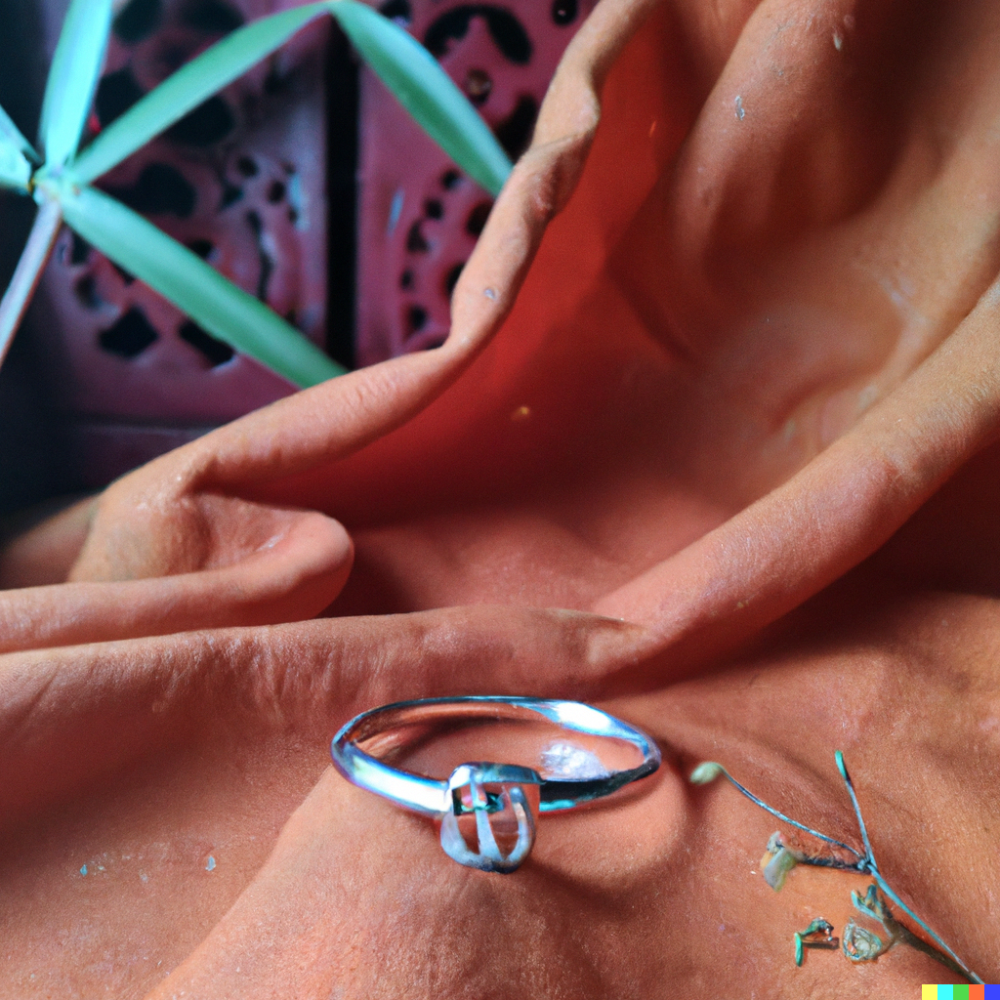

Our Story
Growing up, Jack Kelly was alway a curious boy. He love making art, and doing anything he could to create something beautiful with his hands. He learned quickly that he like to design his own clothes, notebooks, and accessories he would wear.
As he grew older and it was about time for him to get another job, he wanted to do something he was passionate about. He instantly thought of being able to create something beautiful. He stumbled upon an amazing opportunity to work at a ring making company. He worked there for a while, but ended up leaving home and living in a foreign country for some time.
Upon returning home. He was filled with the desire to start making his own pesonalized, qualaity, and beautiful jewelry once again. So... he started Kelly Bands!
This is one of the first silver rings Jack Kelly ever made. - February 7, 2020Ring Examples
Here are a few examples of the silver rings produced by Jack Kelly and sold as Kelly Bands.
A beautiful piece by Jack Kelly. - April 21, 2021 A beautiful piece by Jack Kelly. - September 15, 2021  A beautiful piece by Jack Kelly. - December 16, 2022